LCCDE and Z-Transforms with MATLAB
Purporse Statment: The purpose of this document is to demonstrate how use MATLAB in working with LCCDE's, z-transforms, and system functions. MATLAB will be used to
- solve LCCDE's
- determine zeros, poles, and zero-pole diagrams
- determine impulse and step responses.
Please consult any function documentation for details of usage. The methods discussed here are not an exhastive list of methods.
Contents
- Linear Constanst-Coeficient Difference Equations (LCCDE)
- z-Transform
- z-Transforms in MATLAB
- Pole-Zero Diagram
- Problem 1: Convolution
- Problem 2: iZT
- Problem 3: PFE and PZ-plot with repeated roots
- Problem 4: Impulse, Step, and Freq. Response
- Problem 5: Impulse of Causal and Anticausal System
- Problem 5: Pole-Zero Plot
- References
- Subfunctions
- Useful MATLAB Functions
Linear Constanst-Coeficient Difference Equations (LCCDE)
An important class of LTI systems consist of those systems for which the input x[n] and the output y[n] satisfy and Nth-order linear constant-coefficient difference equation of the form
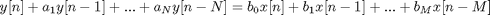
or
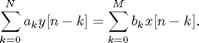
This can also be arranged in the recursive form
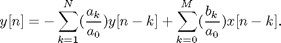
Solutions to LLCDE's can be obtained using various methods. We will discuss methods involvings recursion and z-transforms. Solving LCCDE's using the recursion method requires prior knoledge of inintal conditions and of the function input sequence x[n].
Example 1: Recursion
(Oppenheim, Problem 2.5)
Solve the following LLCDE by recursion.
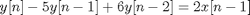
Given that x[n]=u[n], y[n]=0 for n<0, find y[n]. The solution to this will be the system step response. The book's solution for a step response is 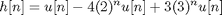 .
% solve recursively a0=1; % a_0 term a=[-5 6]./a0; % 'a_k' terms, k=1:N b=[0 2 0]./a0; % 'b_k' terms, k=0:M p=length(a); % number of a_k terms, order of system q=length(b); % number of b_m terms N=20; x=[zeros(1,p) ones(1,N+1)]; % input sequence (step sequence) y=zeros(1,N+p+1); % preallocate memory for output sequence for n=p+1:length(y) y(n)= -sum(a.*y(n-1:-1:n-p)) + sum(b.*x(n:-1:n-q+1)); %compute y[n] end y=y(p+1:end); % keep values from n = 0 to N figure; stem(subplot(211),[0:20],y) % plot title('Step Response (recursive solution)'); xlim([0 21]); xlabel('n (samples)'); ylabel('Amplitude'); % Compare with book solution n=0:20; h = 1 - 4*2.^n + 3*3.^n; % compute solution stem(subplot(212),[0:20],h) % plot title('Step Response (book solution)'); xlim([0 21]); xlabel('n (samples)'); ylabel('Amplitude');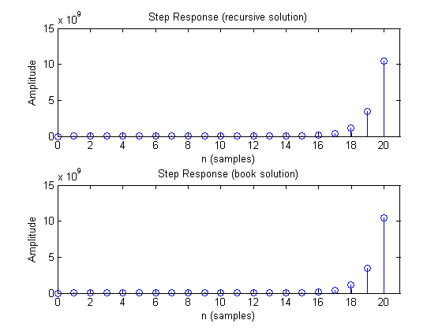
Given that x[n]=delta[n], y[n]=0 for n<0, find y[n]. The solution will be the system impulse response. The book's solution for an impulse response is 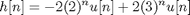 .
% solve recursively x=[zeros(1,p) 1 zeros(1,N)]; % input sequence (impulse sequence) y=zeros(1,N+p+1); % preallocate memory for output sequence for n=p+1:length(y) y(n)= -sum(a.*y(n-1:-1:n-p)) + sum(b.*x(n:-1:n-q+1)); %compute y[n] end y=y(p+1:end); % keep values from n = 0 to N figure; stem(subplot(211),[0:20],y) % plot title('Impulse Response (recursive solution)'); xlim([0 21]); xlabel('n (samples)'); ylabel('Amplitude'); % Compare with book solution n=0:20; h = -2*2.^n + 2*3.^n; % compute solution stem(subplot(212),[0:20],h) % plot title('Impulse Response (book solution)'); xlim([0 21]); xlabel('n (samples)'); ylabel('Amplitude');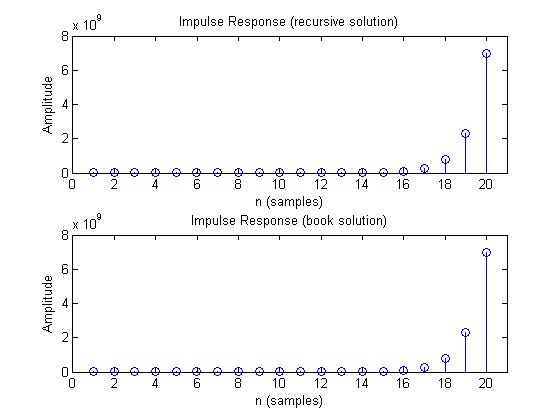
z-Transform
The z-transform allows a more direct and/or closed form solution to a difference equation compared to recusion. Also, the z-transform allows us to extract the zeros and poles of a system.
The z-transform of a sequence x[n] is defined as
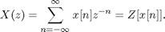
Recall the LCCDE form
Taking the z-tranform of both sides yields
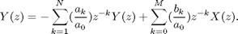
Solving Y(z) in terms of X(z) yields
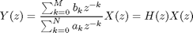
where H(z) represents the system function of the LTI system.
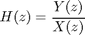
z-Transforms in MATLAB
MATLAB includes several functions that can aid in performing z-transforms (ZT) of a function or sequence and/or it's inverse (iZT). Three methods and their respective functions are discussed below.
Symbolic Toolbox Method
The ztrans() and iztrans() functions perform the z-transform and the inverse z-transform.
Example 2: Sympolic ZT
Find ZT of x[n]=a^n u[n]
syms a n x X % define symbolic variables x=a^n; % define sequence x[n] (Table 3.1) X=ztrans(x) % perform ZT
X = -z/(a - z)
Example 3: Sympolic ZT
Find ZT of x[n]=cos[wn]
syms w n x X % define symbolic variables x=cos(w*n); % define sequence x[n] (Table 3.1) X=ztrans(x) % perform ZT
X = (z*(z - cos(w)))/(z^2 - 2*cos(w)*z + 1)
Example 4: Sympolic iZT (Oppenhiem, Ex. 3.10)
Find iZT of
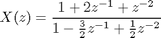
syms z x X % define symbolic variables X=(z^2+2*z+1)/(z^2-3*z/2+1/2) %define transfer function X(z) x=iztrans(X) % perform inverse ZT
X = (z^2 + 2*z + 1)/(z^2 - (3*z)/2 + 1/2) x = 2*kroneckerDelta(n, 0) - 9*(1/2)^n + 8
2. Power Series Method
The deconv function can be used to perform the long division required in power series method.
For the given z-transform
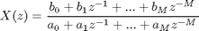
the matlab command is [q,r]=deconv(b,a) where b and a vectors containing the coefficients of the numerator and denominator respectively.
Example 5: iZT by deconvolution
Given X(z) find x[n] by deconvolution
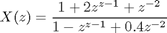
b=[1 2 1]; a=[1 -1 .4]; n=20; b=[b zeros(1,n)]; % make b longer [x,r]=deconv(b,a); % plot figure; stem(subplot(211),[0:length(x)-1],x) % plot title('Power Series Expansion Solution of x[n]'); xlim([0 21]) ylabel('Amplitude') % Compare impulse response subplot(212); impz(b,a); % plot impulse response title('Impulse Response x[n]'); xlim([0 21])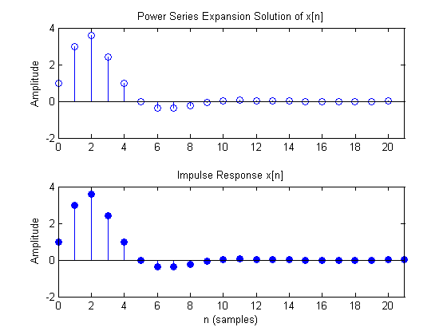
3. Partial fraction expansion (PFE) method
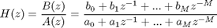
We can use the MATLAB residuez function to convert between partial fraction expansion and polynomial coefficients. Partial fraction expansion may yield a z-function that is then solvable using the inspection method. If there are no multiple roots, then
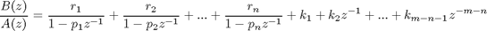
Example 8: PFE
Find the partial fraction expansion of X(z) that is given by
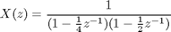
b=1; % numerator coefficients a=conv([1 -1/4],[1 -1/2]); % multiplying polynomials to get denom. coef. [r,p,k]=residuez(b,a) % compute residues (r), poles (p), and direct terms (k)
r =
2
-1
p =
0.5000
0.2500
k =
[]
This represents the partial fraction expansion
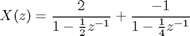
Example 7: PFE (Oppenheim, Ex. 3.10)
Find the partial fraction expansion of X(z) that is given by
b=[1 2 1]; % numerator coefficients a=[1 -3/2 1/2]; % denominator coefficients [r,p,k]=residuez(b,a) % compute residues (r), poles (p), and direct terms (k)
r =
8
-9
p =
1.0000
0.5000
k =
2
This represents the fraction expansion
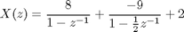
Pole-Zero Diagram
Matlab contains several functions that may help when working with zeros and poles. The zplane and pzmap functions can be used display pole-zero (PZ) diagram of z-functions. The poles and zeros can be determined from rational polynomials using roots, poles, and zero functions.
Example 8: Poles, Zeros, and PZ map
Given H(z) below find the zeros, poles, and plot the PZ map. We will use three methods to find the poles and zeros, and use three methods to plot the PZ map.
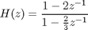
a=[1 -2/3]; % denominator coefs. b=[1 -2]; % numerator coefs. % ZP Method 1 - using 'roots' and 'zplane' functions p1=roots(a); % get poles of rational function z1=roots(b); % get zeros of rational function disp(['Method 1: poles=[' num2str(p1) '] , zeros=[' num2str(z1) ']']) % ZP Method 2 - using 'tf', 'pole', 'zero', and 'pzplot' functions H=tf(b,a); % generate trasfer function based on rational polynomial p2=pole(H); % get poles of transfer function z2=zero(H); % get zeros of transfer function disp(['Method 2: poles=[' num2str(p2) '] , zeros=[' num2str(z2) ']']) H % print transfer funtion to command line % ZP Method 3 - using 'tf2zpk' [z3,p3,k3] = tf2zpk(b,a); %Convert transfer function filter parameters to zero-pole-gain form disp(['Method 3: poles=[' num2str(p3) '] , zeros=[' num2str(z3) '], gain=' num2str(k3)]) % Plot Method 1: using zplane(b,a). NOTE: a and b must be row vectors. figure; zplane(b,a); title('PZ Map using zplane(b,a)'); xlim([-2 2]); ylim([-2 2]); xlabel('Real Axis'); ylabel('Imaginary Axis') % Plot Method 2: using zplane(z,p). NOTE: z and p must be column vectors. figure; zplane(z1,p1); title('PZ Map using zplane(z,p)'); xlim([-2 2]); ylim([-2 2]); xlabel('Real Axis'); ylabel('Imaginary Axis') % Plot Method 3: using pzmap figure; pzmap(H); title('PZ Map using pzmap'); xlim([-2 2]); ylim([-2 2]); xlabel('Real Axis'); ylabel('Imaginary Axis')
Method 1: poles=[0.66667] , zeros=[2] Method 2: poles=[0.66667] , zeros=[2] Transfer function: s - 2 ---------- s - 0.6667 Method 3: poles=[0.66667] , zeros=[2], gain=1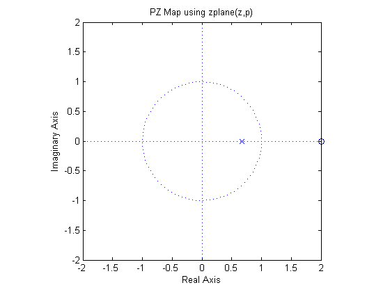 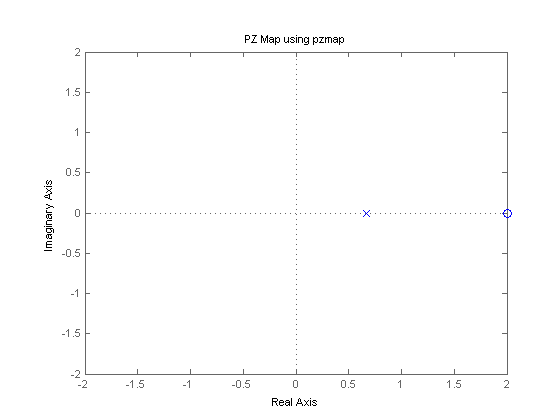
Problem 1: Convolution
(Ingle, Ex. 2.10)
Consider the finite duration input sequence x[n] given by
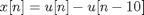
and the infinite duration impulse response h[n] is given by
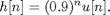
Determine y[n]=x[n]*h[n]
n=-5:50; % define range of n x = stepseq(0,-5,50) - stepseq(10,-5,50); % generate x[n] h=.9.^(0:50); % generate h[n] y_conv=conv(x,h); % convolve x and h y_conv=y_conv(1:length(x)); % keep samples of interest y_filt=filter(1,[1 -.9],x); % compare with filter function % plot convoltion figure; subplot(211); stem(n, y_conv); % plot output sequence xlim([-5 50]); title('Output Sequence y[n] (convolution)'); xlabel('n (samples)'); ylabel('Amplitude'); % plot filter comparison subplot(212); stem(n, y_filt); % plot output sequence xlim([-5 50]); title('Output Sequence y[n] (filter fxn)'); xlabel('n (samples)'); ylabel('Amplitude');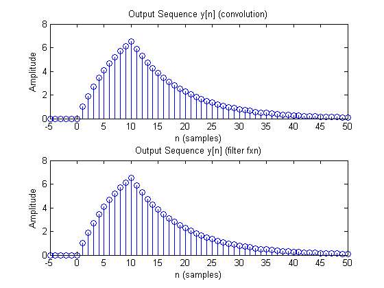
Problem 2: iZT
Determine the iZT of X(z) so that the resulting sequence is causual and contains no complex numbers where X(z) is given as
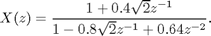
b=[1 0.4*sqrt(2)]; a=[1 -0.8*sqrt(2) 0.64]; [r,p,c] = residuez(b,a) Mp=abs(p') % pole magnitude Ap=angle(p')/pi % pole angles in pi units
r =
0.5000 - 1.0000i
0.5000 + 1.0000i
p =
0.5657 + 0.5657i
0.5657 - 0.5657i
c =
[]
Mp =
0.8000 0.8000
Ap =
-0.2500 0.2500
From the above we get
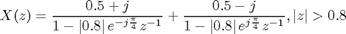
and from Table 3.1 we have
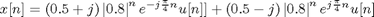
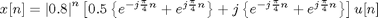
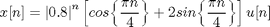
%verify in Matlab n=0:20; impseq=[1 zeros(1, length(n)-1)]; % generate impulse sequence x1=filter(b,a,impseq); % compute impulse response x2=(0.8.^n).*(cos(pi*n/4)+2*sin(pi*n/4)); % compute impulse response (book solution) % Plot figure; subplot(211); stem(n,x1); % plot impulse response title('Impulse Response from filter fxn'); xlabel('n (samples)'); ylabel('Amplitude'); subplot(212); stem(n,x2); % plot impusle response title('Impulse Response from solution'); xlabel('n (samples)'); ylabel('Amplitude'); figure; zplane(b,a); % plot PZ map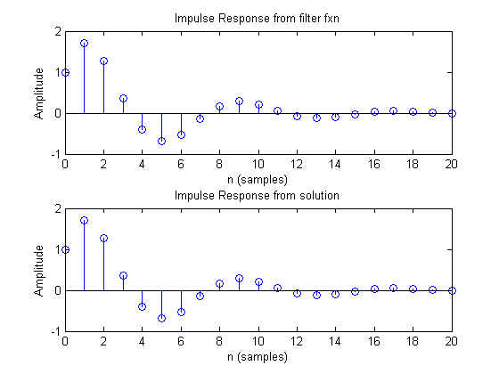 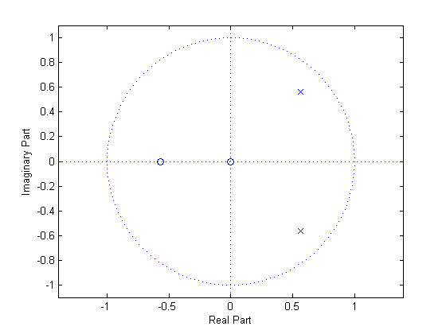
Problem 3: PFE and PZ-plot with repeated roots
(Oppenheim, 3.33a)
Find the partial fraction expansion of X(z) that is given by
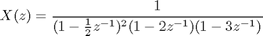
b=[1]; % numerator coefficients a1=conv([1 1/2],[1 1/2]); % multiplying polynomials to get denom. coef. a23=conv([1 -2],[1 -3]); a=conv(a1,a23); [r,p,k]=residuez(b,a) % compute residues (r), poles (p), and direct terms (k)
r =
2.2041
-1.2800
0.0473
0.0286
p =
3.0000
2.0000
-0.5000
-0.5000
k =
[]
This represents the partial fraction expansion
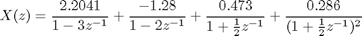
figure; zplane(b,a)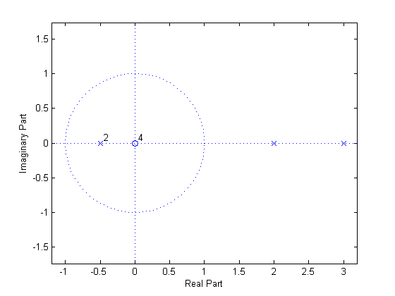
Problem 4: Impulse, Step, and Freq. Response
(Oppenheim, Problem 2.9)
Find the impulse response, freq. response, and step response of the LTI system defined by the difference equation
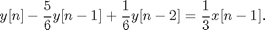
a=[1 -5/6 1/6]; b=[0 1/3 0]; figure; freqz(b,a) % frequency response title('Freq. Response') figure; subplot(221); impz(b,a) % plot impulse response subplot(222); stepz(b,a) % plot step response % Compare with book solution n=0:14; hImp=-2*(1/3).^n+2*(1/2).^n; hStep=1+(1/3).^n-2*(1/2).^n; subplot(223); stem(n,hImp) % plot impulse response title('Impulse Response (book)'); xlabel('n (samples)'); ylabel('Amplitude'); subplot(224); stem(n,hStep) % plot impulse response title('Step Response (book)'); xlabel('n (samples)'); ylabel('Amplitude');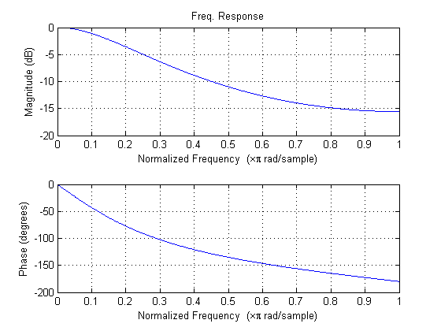 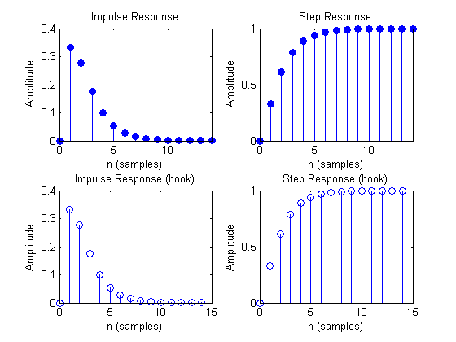
Problem 5: Impulse of Causal and Anticausal System
(Oppenheim, Problem 2.16)
Consider the difference equation
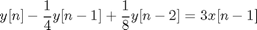
b) Both a causal and an anticausal LTI system are characterized by this difference equation. Find the impulse responses of the two systems. c) Show that the causal LTI is stable and the anticausal LTI system is unstable.
From the difference equation and the ZT we can generate the system function H(z)
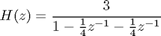
We can use matlab to get the expanded form of H(z).
b=[3]; a=[1 -1/4 -1/8]; [r,p,c]=residuez(b,a)
r =
2
1
p =
0.5000
-0.2500
c =
[]
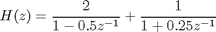
Using Table 3.1 we get the following causal and anticausal impulse responses by taking the iZT of the terms in H(z).
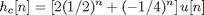
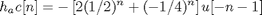
From ROC we see causal system is stable (ROC includes unit cirlce) and the anticausal system in unstable.
n=0:50; hc=2*(1/2).^n + (-1/4).^n; n=-50:0; hac=-2*(1/2).^-n - (-1/4).^-n; roc_c=max(abs(p)); %ROC of causal is righ-sided extending from largest pole roc_ac=min(abs(p)); %ROC of causal is righ-sided extending from smallest pole % Plot Pole-Zero maps with ROC % Causal System figure; circle(roc_c,0) % draw ROC hold('on'); zplane(b,a) % draw ZP map title('PZ Map (causal)') % Anticausal System figure; circle(roc_ac,0) % draw ROC hold('on'); zplane(b,a) % draw ZP map title('PZ Map (anticausal)')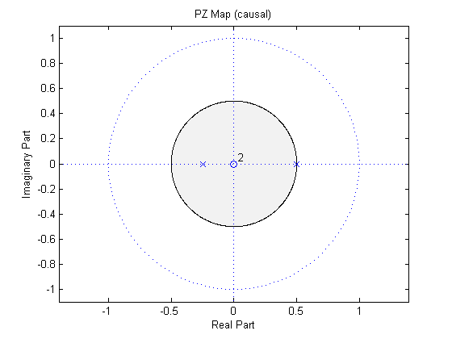 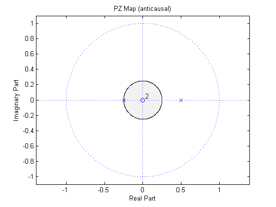
Problem 5: Pole-Zero Plot
(Oppenheim, Problem 3.12)
Sketch the pole-zero plot for each of the following z-transforms and shade ROC:
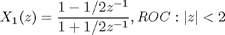
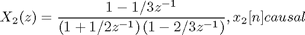
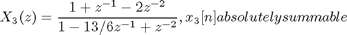
% define a and b of each z-function a1=[1 2]; b1=[1 -1/2]; a2=conv([1 1/2],[1 -2/3]); b2=[1 -1/3]; a3=[1 -13/6 1]; b3=[1 1 -2]; % find poles for each to determine ROC p1=roots(a1); p2=roots(a2); p3=roots(a3); disp(['p1=[' num2str(p1') '], p2=[' num2str(p2') '], p3=[' num2str(p3') ']' ])
p1=[-2], p2=[0.66667 -0.5], p3=[1.5 0.66667]
X1(z) has ROC z<2, X2(z) has ROC z>2/3, X3(z) has ROC 2/3 < z < 3/2
%plot each PZ map and ROC % X1 figure; circle(p1,0) % draw ROC hold 'on'; zplane(b1,a1) % draw ZP map title('PZ Map: X_1(z)') % X2 figure; circle(max(abs(p2)),1) % draw ROC hold 'on'; zplane(b2,a2); % draw ZP map title('PZ Map: X_2(z)') set(gca,'color',[.95 .95 .95]) % X3 figure; circle(3/2,0); hold on; circle(2/3,2); % draw ROC hold on; zplane(b3,a3) % draw ZP map title('PZ Map: X_3(z)')
References
Alan V. Oppenheim and Ronald W. Schafer. 2009. Discrete-Time Signal Processing (3rd ed.). Prentice Hall Press, Upper Saddle River, NJ, USA.
Vinay K. Ingle and John G. Proakis. 1999. Digital Signal Processing Using MATLAB (1st ed.). Brooks/Cole Publishing Co., Pacific Grove, CA, USA.
Subfunctions
type circle
function circle(r,side)
% draws a filled circle with fill defined by side
% r: defines radius
% side: defines the side (1= fill outside, 0=foll inside)
t=linspace(0,2*pi,1000);
x=r*cos(t); y=r*sin(t); % create circle points for ROC
if side==1
c=[1 1 1];
set(gca,'color',[.95 .95 .95]);
hold(gca,'on');
elseif side==2 % fill circle white and white axes
c=[1 1 1];
else
c=[.95 .95 .95];
end
fill(x,y,c); % draw circle
hold(gca,'off');
end
type stepseq
function [x,n]=stepseq(n0,n1,n2)
%Generate x(n)=u(n-n0);n1<=n<=n2
%[x,n]=stepseq(n0,n1,n2)
STEP = 1;
n = n1:STEP:n2;
x = n > n0;
end
Useful MATLAB Functions
close all; % close all figures clear % clear workspace